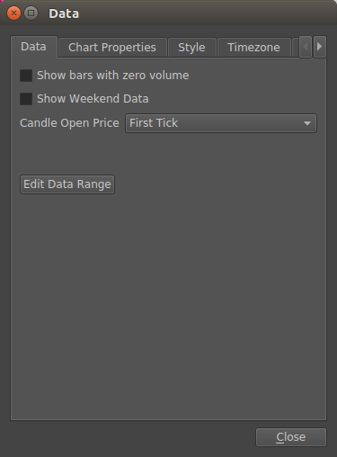
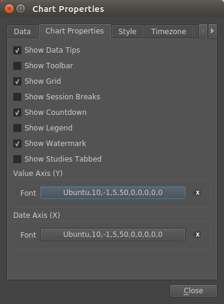
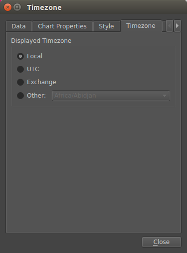
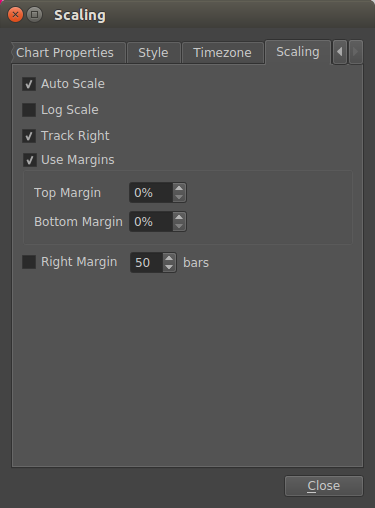

Chart Properties window¶
Data tab¶
- Show bars with zero volume
- Keep bars with zero volume instead of removing them if the data source doesn’t provide zero volume bars they are created. Created bars use the previous bars close price for the new bars open, high, low, and close values.
- Show Weekend Data
- Keep bars (and price updates) that occur on the weekend. This option does not affect symbols trading 24/7 (e.g cryptos).
- Candle Open Price
Choose what price to use for the candle open price.
- First Tick - Use the first tick received at or after the candle start time
- Previous Close - Use the previous candles close as the new candles open price
- Edit Data Range
- Set the range of data to load into the chart. The range can be two dates, an end date and a number of bars, or dynamic. Dynamic is the default, additional bars are loaded on demand when you scroll back in time.
Chart Properties tab¶
- Show Data Tips
- Show a floating window that displays the price, date, and indicator values for the current bar the mouse is hovering.
- Show Toolbar
- Show the toolbar, some chart properties can only be accessed from the toolbar. You can use the keyboard shortcut to quickly show/hide the toolbar if you need to change those properties.
- Show Grid
- Show horizontal and vertical lines behind the symbols price display. Only vertical lines are displayed for sub-plots (i.e indicator windows).
- Show Session Breaks
- Shows vertical lines at the end-of-day time for intraday charts. On chart intervals larger than one day, the vertical lines appear weekly or monthly.
- Show Countdown
- Shows the remaining time until the next bar is expected. This will countdown to zero and restart when the first tick of the new bar is received.
- Show Legend
- Shows a small colored box or icon that represents indicator output. The name of the output is also displayed. Some indicators use their own colors, so the legend icon will not match.
- Show Watermark
- Display the symbol and interval text at the top-centre of the chart
- Show studies tabbed
- Displays indicators sub-plots in tabs instead of stacked vertically under the main plot
- Value Axis (Y) - Font
- Set a custom font for the price axis
- Date Axis (X) - Font
- Set a custom font for the date-time axis
Style tab¶

- Chart Type
- Set the chart type displayed for the main symbol
- Show price line
- Shows a horizontal line across the entire chart at the level of the last candles close price
Timezone tab¶
- Displayed Timezone
Select the time-zone used to display date-time values on the charts X axis, and in the data tip.
- Local - use the system time zone
- UTC - use UTC/GMT
- Exchange - Use the time-zone that is specified in the symbol directory. For Forex and US stocks this is usually New York time, for cryptos this is UTC or UTC+8 for some of the Asian exchanges.
- Other - allows you to set any available time-zone
Scaling tab¶
- Auto Scale
- The price axis is automatically adjusted to fit the price data displayed
- Log Scale
- Use log scale for price axis
- Track right
- Automatically scroll right as new bars are created or received
- Use margins
- Enable or disable the top and bottom margins
- Top Margin
- Margin as a percentage of window height to leave empty above the main price data
- Bottom Margin
- Margin as a percentage of window height to leave empty below the main price data
- Right Margin
- Number of bars after the last bar to leave empty